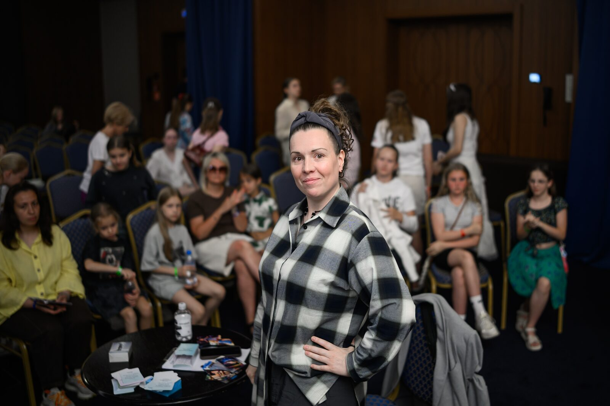
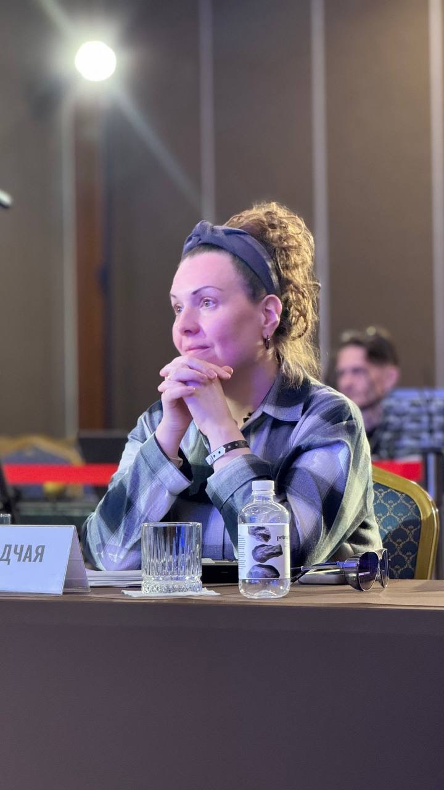

Знакомство
Экспресс-сессия
Для
разовых вопросов, разбора конкретной ситуации перед выступлением
Формат
онлайн, 30 минут
2 900 ₽
Записаться

Ко мне приходят родители юных вокалистов, взрослые артисты и вокальные педагоги.
Я не занимаюсь постановкой голоса — этим занимаются вокальные педагоги. Я работаю с тем, что мешает голосу быть свободным: с телом, тревогой, внутренними запретами, потерей связи с собой на сцене.
В основе моей работы — два авторских инструмента: «Пирамида трансформации артиста» и «5 Д» — пять измерений голосового состояния.
Направление «вокальная психология» я развиваю совместно с психологом Дмитрием Осадчим.
“ Я работаю с тем, что мешает голосу отразить уникальную личность артиста.Подробнее о методе →

Я закончила музыкальную консерваторию в г. Ростов-на-Дону. Двадцать лет педагогического и сценического опыта. Приглашённый эксперт проектов Ларисы Долиной, Этери Бериашвили, Леонида Агутина, Аниты Цой, Доминика Джокера.
Со мной вокалисты на сессиях могут говорить на своём языке. Это позволяет решать запрос достаточно быстро.
Сегодня я — наставник Музыкальной академии Ларисы Долиной, приглашённый эксперт форума Леонида Агутина (2021–2026), спикер выставки «Россия» на ВДНХ, автор книги «Мама звезды», трёх авторских колод метафорических карт и авторских курсов по психологии артиста.
Первая встреча — короткая. Разбираем ситуацию, обсуждаем запрос, вместе решаем, подходит ли формат.
Смотрим, что происходит на всех пяти измерениях голосового состояния. Находим точку входа — то, откуда начать работу.
Индивидуально или в паре с семьёй. Практические инструменты, домашние задания, обратная связь между сессиями.
Собираем то, что сработало, в личную «карту» — то, к чему клиент возвращается сам, когда уже работает без меня.
Выбирайте по запросу и глубине. Если сомневаетесь — начните с экспресс-сессии: 30 минут, чтобы понять, подходит ли формат.
Все отзывы размещены с разрешения клиентов.
Дочь перестала плакать перед конкурсами. Уходит на сцену — и я больше не отгадываю по её походке, как всё пройдёт.
После «Голоса. Дети» сын боялся даже репетировать. С Марией мы вернули ему желание — сначала выйти в комнату к пианино, потом на сцену.
Мы шли готовить дочь к консерватории — и получили гораздо больше. Разобрались, где я как мама подмывала её опору, а где помогала.
У меня была очень тяжёлая мутация, и после того, как мой голос из высокого, производящего большое впечатление своей силой и диапазоном, перешёл в более низкую тесситуру, значительно уменьшился диапазон. Меня это очень сильно триггерило. И я думал, что я не смогу производить впечатление своим новым голосом на людей. Чрезмерная тревога забирала конкретно у меня возможность работать. Всего было 2–3 индивидуальные онлайн-встречи. Главное, что я могу отметить, — это то, что Мария, безусловно, профессионал и человек, который может расположить к себе. Это невероятный мэтч и просто прекрасно. Меня это очень сильно раскрепостило. Мы работали абсолютно комфортно, без каких-либо напрягов. Мария очень чётко даёт понять в моменте то, что твоя проблема не такая глубинная, как ты себе её рисуешь. В моём случае все эти проблемы были лично у меня в голове, которые я себе надумал. Мария очень чётко помогает избавляться от страха.
Я проходила две индивидуальные встречи и также онлайн-группу «Психология артиста», а также онлайн-курс по пейрафобии. Индивидуальную встречу проходила с запросом поиска индивидуальности артиста, преодоления блоков при создании песен и расстановки приоритетов в своей музыкальной деятельности.
Во-первых, мне безумно помогла медитация, которую создала Мария, чтобы не переживать перед выступлением, — я попробовала её на практике, и она мне действительно помогла. Также Мария помогла мне расставить приоритеты, чтобы больше успевать и меньше стрессовать. Благодаря ей я не совершила ошибку на фоне переживаний, которая могла изменить мою музыкальную деятельность не в лучшую сторону. Спасибо большое! Её поддержка действительно благоприятно сказалась на моей не только творческой деятельности, но и в принципе жизни!
Сессии с Марией для меня — это всегда уголок спокойствия и безопасности. В моментах, когда я чувствую себя запутанной или слишком уставшей, я всегда знаю, что у меня есть плотная психологическая поддержка. Одна из тем для сессий была: прокрастинация и откладывание важных дел, приоритизация. Работа над темой участия в ТВ-проектах. Мы провели 2 индивидуальных встречи.
На сессии с Марией я позволяю себе говорить всё, что приходит в голову. Без лишнего контроля. Я, наверное, ни с кем так свободно не говорю о всех своих мыслях и чувствах, как с Марией, всегда знаю, что это безопасно и легко.
Для меня курс «Профессиональное обновление вокального педагога» оказался очень полезным. Обычно страшно идти в подобные курсы, опасаешься почувствовать осуждения коллег, увидеть, что «с тобой что-то не так»… Но здесь царит атмосфера абсолютной поддержки и принятия! В такой обстановке двигаться навстречу новым точкам роста приятно и эффективно! Мария дала огромное количество конкретных полезных инструментов для работы с каждым аспектом, который может вызывать вопросы в педагогической работе. Понравился и формат: встречи онлайн с возможностью задать вопросы и поделиться мнениями. Всё очень точно, лаконично и ёмко! Большое спасибо, Мария!
Я к Марии отправляла свою студентку. Тема была боязнь, страх выступлений публичных. Что я заметила после работы? Она стала меньше волноваться. Она стала более уверенно выступать, контролировать свой голос во время выступления. И она стала более гармонично смотреться на публичных выступлениях. Я уверена в том, что каждому вокалисту, у которого есть большой страх выступлений публичных, ему нужен вокальный психолог. И это очень здорово, когда Мария помогает, видит проблему, помогает работать с мыслями человека и помогает его направить в нужное русло.
Отправляла студентку к Марии Осадчей, когда поняла, что страх сковывает человека и моих наставлений и поддержки, как педагога, недостаточно, вопрос кроется глубже. После сессии с Марией выяснилось, что у студентки был свой глубинный страх, который важно было проработать с психологом! Работа была проведена, и девочка гораздо более осознанно стала прорабатывать свои эмоции перед выходом на сцену. Я увидела результат и благодарю Марию за профессионализм и чуткий подход!
Книга для родителей юных артистов о том, как поддерживать талант, не подменяя цели ребёнка своими.
Следующая книга о том, что отличает 10% артистов от остальных 90%. Готовится к выходу.
Для работы с артистом.
Для сценической работы.
Три раздела: артисту, родителю, наставнику.
Если вы хотите обсудить конкретный запрос — напишите. Разберём вашу ситуацию, обсудим формат работы, вместе решим, подходит ли она вам.